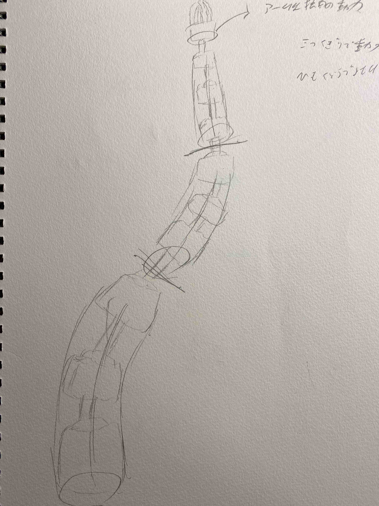
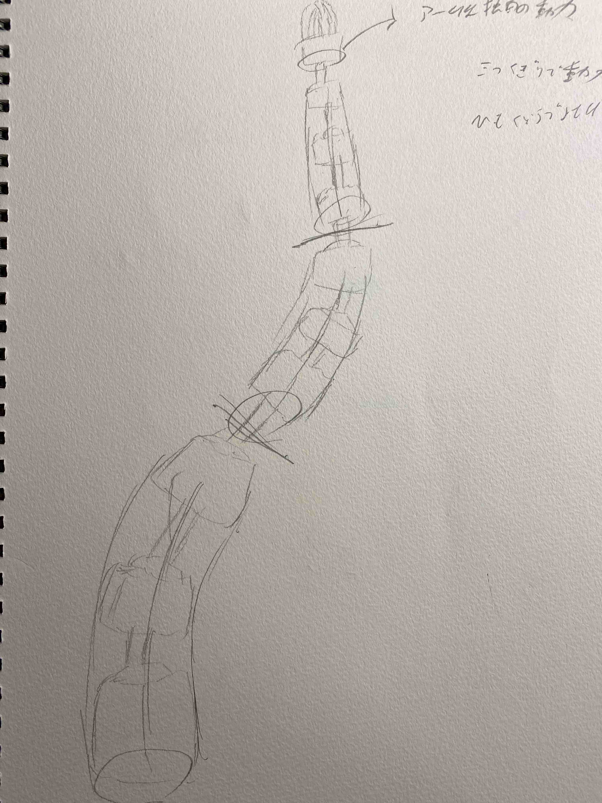

１．アイデアのスケッチ
今回の最終課題について、主に二つの案がある
一つが個人製作でも作ろうとしていたしっぽのようなロボットアームを作ること

もう一つが、歯車や色ガラス（色付きの光を通すものなら何でも）を光で照らして、光の影を楽しむ照明みたいなもの

この二つがおもに考えついているものである。（2025/05/25現在） 現在は照明のほうを作ることを考えている
一つが個人製作でも作ろうとしていたしっぽのようなロボットアームを作ること

もう一つが、歯車や色ガラス（色付きの光を通すものなら何でも）を光で照らして、光の影を楽しむ照明みたいなもの
この二つがおもに考えついているものである。（2025/05/25現在） 現在は照明のほうを作ることを考えている
２．概要
まず第一に、先ほど述べたように今二つの案があるがそれぞれ
ロボットアームを作る案（作りたい方）
・難易度：激高（必要となる機器が存在しないため不可能？）
・製作費用：１～５万→製作完了前に破産するかも
・製作に要する時間：自分の想定・計画が寸分もたがわず進行したらおよそ２～３か月・
歯車装飾の照明を作る案（代替案）
・難易度：普通
・製作費用：安くて千五百円高くても五千円くらい
・製作に要する時間：１～２カ月程度
となっており、ロボットアームのほうはかなり厳しく、設計段階でさえ製作期間で終わらない可能性が高い。
のでメインは歯車装飾の照明を作る法にしようと考えている
ロボットアームを作る案（作りたい方）
・難易度：激高（必要となる機器が存在しないため不可能？）
・製作費用：１～５万→製作完了前に破産するかも
・製作に要する時間：自分の想定・計画が寸分もたがわず進行したらおよそ２～３か月・
歯車装飾の照明を作る案（代替案）
・難易度：普通
・製作費用：安くて千五百円高くても五千円くらい
・製作に要する時間：１～２カ月程度
となっており、ロボットアームのほうはかなり厳しく、設計段階でさえ製作期間で終わらない可能性が高い。
のでメインは歯車装飾の照明を作る法にしようと考えている
３．プロセスメモ
やるべきこととプロセス
歯車装飾の照明
光で照らされる歯車の設計・全体の設計→モーター駆動とライトのプログラム→全体のテスト
現在考えられる確実に必要なもの：
（ステッピングorサーボ）モーター×１・単三電池二つほど・LEDライト（変色可）・照度センサー・モータードライバー 見栄え用の色付ける何か
2025/06/02全体の設計の途中・テストで歯車を印刷した。テスト結果は問題なし。
2025/06/09ライトアップされる部分の印刷が完了・土台の設計完了
また、pythonのほうでQRコードを読み込む方法でトグル式スイッチのプログラムを作れたため、
サーバーとのやり取りのプログラムもテスト完了

やるべきこと：モータードライバーとLEDライトと電池入れの購入・テスト 土台の印刷
歯車装飾の照明
光で照らされる歯車の設計・全体の設計→モーター駆動とライトのプログラム→全体のテスト
現在考えられる確実に必要なもの：
（ステッピングorサーボ）モーター×１・単三電池二つほど・LEDライト（変色可）・照度センサー・モータードライバー 見栄え用の色付ける何か
2025/06/02全体の設計の途中・テストで歯車を印刷した。テスト結果は問題なし。
2025/06/09ライトアップされる部分の印刷が完了・土台の設計完了
また、pythonのほうでQRコードを読み込む方法でトグル式スイッチのプログラムを作れたため、
サーバーとのやり取りのプログラムもテスト完了
やるべきこと：モータードライバーとLEDライトと電池入れの購入・テスト 土台の印刷